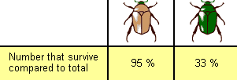
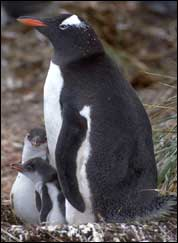
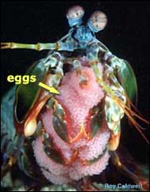

زیستشناسان از عبارت سازواری1 برای توصیف سودمندیِ یک ژنوتیپ در بقای فرزندان در نسل بعد نسبت به ژنوتیپهای دیگر استفاده میکنند. پس اگر سوسکهای قهوهای به صورت پیوسته و به دلیل رنگشان فرزندان بیشتری )نسبت به سوسک های سبز( از خود بهجا بگذارند، میگوییم سوسکهای قهوهای سازواری بیشتری داشتهاند.

البته، سازواری یک موضوع نسبی است. سازواریِ یک ژنوتیپ به محیط زیستی که جاندار در آن زندگی میکند بستگی دارد. برای مثال، ژنوتیپی که در عصر یخبندان سازوارترین است، احتمالاً پس از پایان این دوره دیگر سازوارترین ژنوتیپ نخواهد بود.
|  |  |  |
مراقبت از فرزند (تصویر اول)، زاییدن هزاران فرزند -که بسیاری از آنها بقا نمییابند- (تصویر دوم)، به رخ کشیدنِ پرهای پر زرق و برق که جنس مونث را جذب میکند (تصویر سوم)، باری بر سلامتی و بقای والدین هستند؛ اما، این راهبردها سازواری را افزایش میدهند، چون به والدین کمک میکنند فرزندان بیشتری از آنها در نسل بعد باقی بماند.
سازواری یک مفهوم سودمند است، چون تمامی نکاتی که در انتخاب طبیعی مهم است (بقا، جفتیابی و تولیدمثل) را در کنار هم و در یک ایده جمع کرده است. سازوارترین فرد ضرورتاً قویترین، سریعترین یا بزرگترین نیست. سازواریِ یک ژنوتیپ دربردارندهٔ تواناییِ بقا، یافتن جفت، تولیدمثل و در نهایت باقی گذاشتن ژنهای خود در نسل بعدی است.
ممکن است اینگونه تصور شود که انتخاب طبیعی به طور اختصاصی بر توانایی بقا عمل میکند -ولی، همانطور که مفهوم سازواری نشان میدهد، این تنها نیمی از مساله است. وقتی انتخاب طبیعی بر جفتیابی و رفتار تناسلی2 عمل میکند زیستشناسان آن را «انتخاب جنسی3» مینامند.